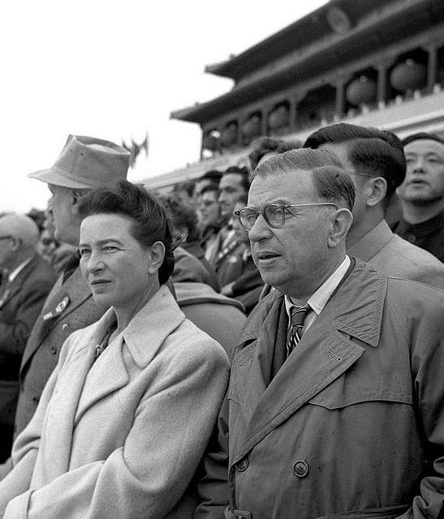
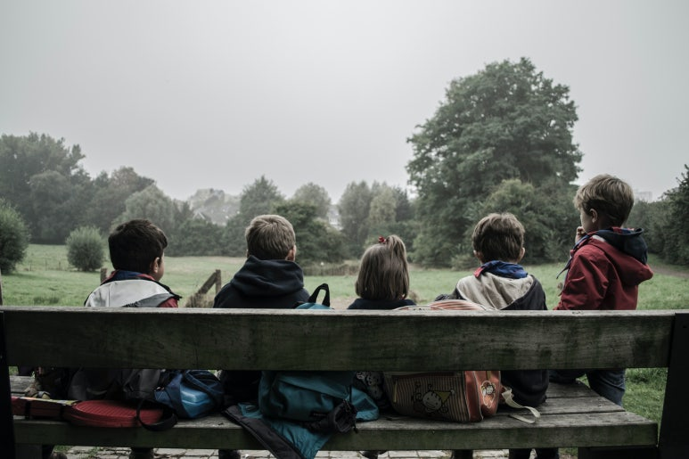

을유 시리즈
-
 책을 쓰는 과학자들
책을 쓰는 과학자들#5. “새들은 다 어디로 갔을까?”
『과학혁명의 구조』가 학계에 큰 영향을 주었다면, 같은 해에 출간된 또 다른 책은 전 세계에 더욱 막대한 영향력을 떨치고 대중에게 비교적 생소한 과학적 탐구 주제였던 환경주의를 소개했다. 공공 정책을 변화시키고 사람들의 전반적인 인식 수준도 높인 이 책이 수백만 명의 죽음에 간접적인 책임이 있다고 주장하는 사람들도 있다. 또한 이 책의 저자는 여성이었다. 1907년 미국 펜실베니아 스프링데일
-
 게르하르트 리히터
게르하르트 리히터#5. “아름다운 행운의 빛” 컬러패널
리히터는 뒤셀도르프에 있는 페인트 전문점 조넨헤어초크Sonnenherzog에서 그림 도구를 구입했다. 그리고 그곳에 전시된 페인트 색상표를 보고 새로운 그림에 대한 영감을 얻었다. 그런 점에서 컬러패널은 이러한 페인트 색상표를 확대한 것으로도 읽을 수 있다.
-
연애 편지
>#5. 보부아르가 보낸 마지막 편지
매우 소중한 당신. 어떤 편지도 부치지 않고, 어떤 편지도 오지 않는 영원 같은 시간이 흘렀어요. 당신에 관한 몇 가지 소식이 새어 들어왔어요. 당신이 『더 네이션』에 쓴 〈폴라무르 박사〉의 시나리오 작가(그의 이름을 잊어버렸어요)에 대한 훌륭한 글과, 또 어떤 잡지에서였는지 기억나지 않지만 여인들과 사랑, 결혼 등에 관해 나눈 흥미진진한 인터뷰들이요. 알랭인가, 세르주인가가 당신이 매우 고상한 의
-
고통을 말하지 않는 법
#5. 아이들은 기억한다
어느 날, 심야 라디오 방송에 다시아 블랙이 나온다. 그는 제2차 세계 대전 때 훤히 공개된 은신처에 머물며 살아남은 여성이다. 그는 아리아인 아이로 위장하고 폴란드인 기독교도 가족과 함께 살았고, 무릎을 꿇은 채 ‘올바른 신’에게 기도했으며, 그렇게 자신의 새로운 정체성을 너무도 꽉 부여잡은 나머지 한동안 자신의 진짜 이름을 기억하지 못했다고 한다. 그의 부모님은 전쟁 중에 일찌감치 세상을 떠났다.